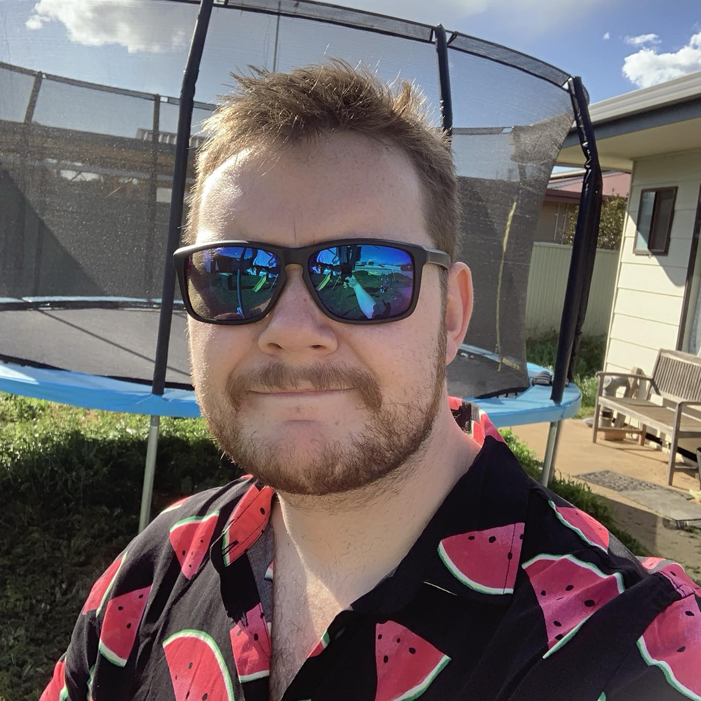
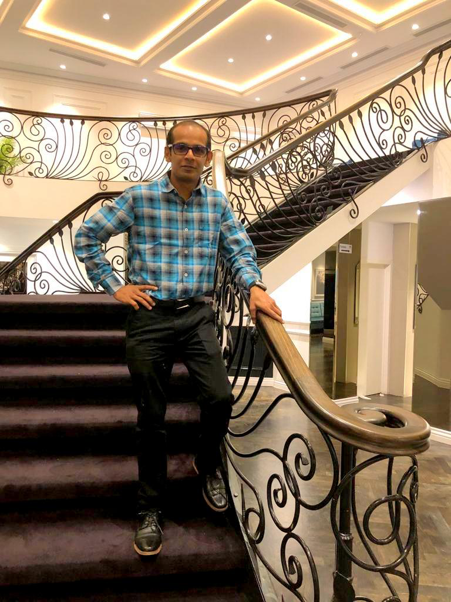

Team Profile:
Benjamin Saar (Ben) is 23 years old and lives in the Dandenong Ranges just east of Melbourne, Victoria. He is currently working as a Service Technician for an IT company in Melbourne and has been doing so for just shy of two years. He has spent many years of his life playing a multitude of sports. He played soccer for around 18 years, only stopping when he started full-time work. From an IT perspective however, he has always had an avid passion for technology. Whether it be messing with bits of hardware and building PC’s or just playing games, technology has always been there. Working in a more technical space and getting to work in a business environment has really opened his eyes to the limitless possibilities that IT has, and how it can be used to make life easier for all.

Jacob Patrick (Jake) lives in the Fleurieu Peninsula region near Adelaide, South Australia. He comes primarily from a hospitality background and has also dabbled in other areas including aquaculture, horticulture, farm labouring and manufacturing. His interests include traveling, gardening, cooking and tinkering with old gaming consoles. He first became interested in IT as a career while traveling when he realised that it is possible to work from anywhere in the world using only a laptop and an internet connection. Recent world events have highlighted to him the importance of being adaptable he is keen to forge a future for himself that will allow more freedom and options in his life.

Jordan O'Meara is a 29-year-old father of one based in regional Victoria, Australia. He has been interested in IT for as long as he can remember, always tinkering with hardware and software throughout his childhood. Although his experience with IT and computers is entirely non-professional, he believes that the familiarity he has built with technology over the years gives him an advantage when learning new things in the IT space.

Murray Nesteroff lives in the Inner West in Sydney, NSW. His first professional role was at a butcher shop for 5 years, where he learnt a few things about life. It took him a while to realise that it wasn’t for him and after a few other jobs, including working at a Samsung mobile store, he landed at the telco that he is currently work for. His interests include sport, photography and travelling. He loves spending time in the country away from the busy city just to recharge. He has had an avid interest in IT ever since he built his first gaming PC at a young age. Murray believes that IT is an amazingly broad industry with incredible opportunities, and he can’t think of making his profession in any other field.

Sneha Sathpathy lives in Melbourne, Vic and is a dedicated wife, mother of two, and a full-time corporate woman working at the Department of Premier and Cabinet (VIC) within the IT Division. Having an Indian origin, she was brought up in New Zealand and then moved to Brisbane, where her family decided to settle down. There, she completed a Bachelor of Justice and an Advanced Diploma in Business Management. She took up a career in Information Technology after majoring in Psychology. Sneha’s perspective on life is that “you can never be too small or too big for anything, if you set your mind on achieving those goals”, and as if her life were not busy enough already, she decided to take one step further and challenge herself by enrolling back into university with the Bachelor of Information Technology.

Rajaneesh Sankaran Nair Sukumarai Amma (Raj) was born and raised in India and moved to Australia in 2012. He now lives in Dandenong, in the south-east part of Melbourne. His hobbies are travelling, pencil drawing, playing chess, listening to music and cruising. His best sailing was an amazing 14 nights cruise with Princess Majestic ship to Sydney from Auckland, New Zealand. Rajaneesh holds a diploma in Mechanical Engineering and is a certified Computer Numerical Control (CNC) programmer. He started his career with Suzuki Motors as a CNC metal cutting Machine Operator in Gurgaon, India. Presently he works with Australia’s most reputable recreation vehicle manufacturer - Jayco Caravans as a Team Leader. It is his dream to become an IT professional, and knowing his passion, his lovely wife Ayswaria suggested that he do an undergraduate course in IT. He knows that this will be a milestone in his life.
